01
01Taper fade
Strak in de nek en aan de slapen, met een overgang die je niet ziet beginnen. Low, mid of high, jij zegt het.
Fades, krullen, mullets, lijnen en baard. Voor mannen en ook voor vrouwen, daar staat de Wo in onze naam voor. Schuif aan, neem iets te drinken, de muziek staat al op.
4,8uit 418 Google-reviews
@womensbarbershop · 9,7K volgersIedereen ziet er goed uit als hij uit de stoel stapt. Het echte werk zie je de dag erna, als je je haar zelf in model brengt. Daar knippen wij voor. Zeg wat je wil of toon een foto, wij zeggen eerlijk wat bij jouw haar past.
01Strak in de nek en aan de slapen, met een overgang die je niet ziet beginnen. Low, mid of high, jij zegt het.
 02
02Knippen en in model brengen, zodat ze thuis ook zo vallen.
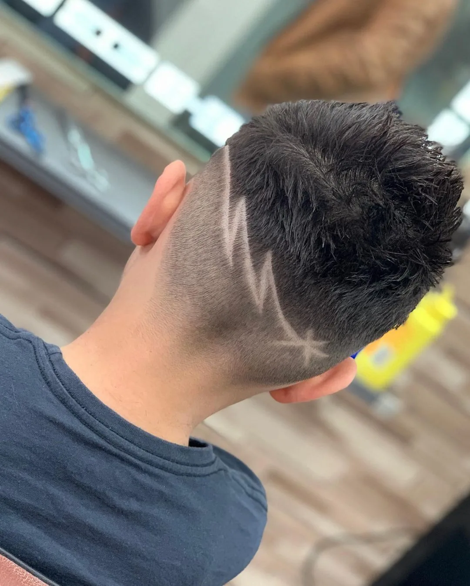
03Een scheiding, een bliksem, een eigen ontwerp. Toon het en het staat erin.
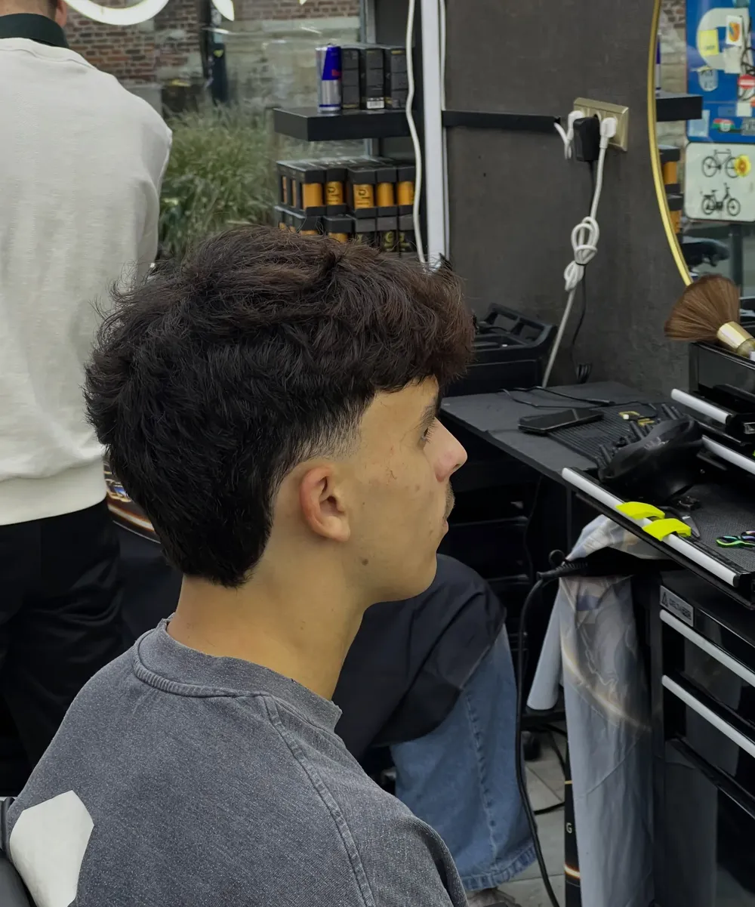
04Kort aan de zijkant, lengte in de nek. Op jouw maat.
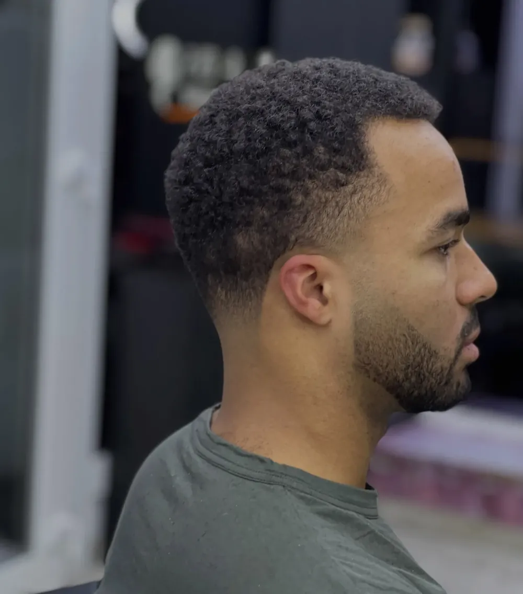
05Bijwerken, contouren en een baard die bij je kapsel past.
Ook voor vrouwen. Wo-Men's zegt het eigenlijk al: dames knippen en stylen we even graag. En de producten die we gebruiken, kan je bij ons ook kopen.
Boek voor damesJe komt voor je fade, maar je blijft even hangen. Er staat muziek op, je krijgt iets te drinken en in de zetels wordt altijd wel over iets gebabbeld. Over voetbal, over de week, over niks.
"When I enter it feels like home."
Een vaste klant, in een review op onze site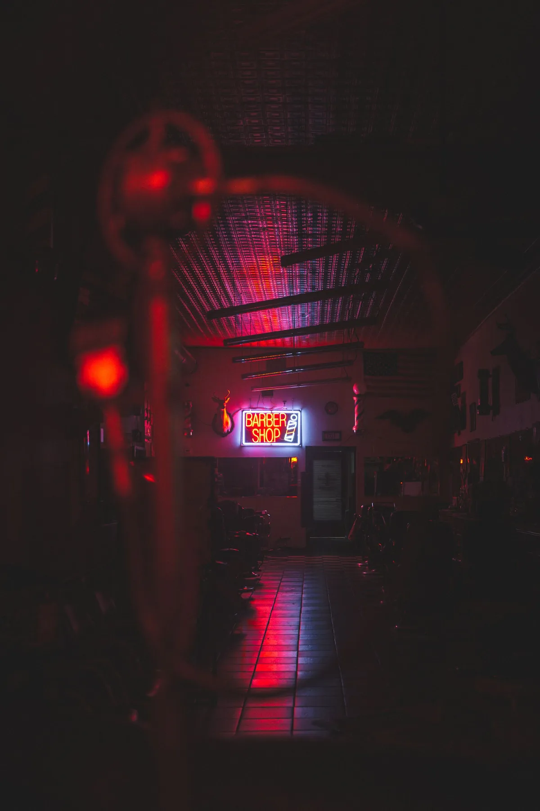
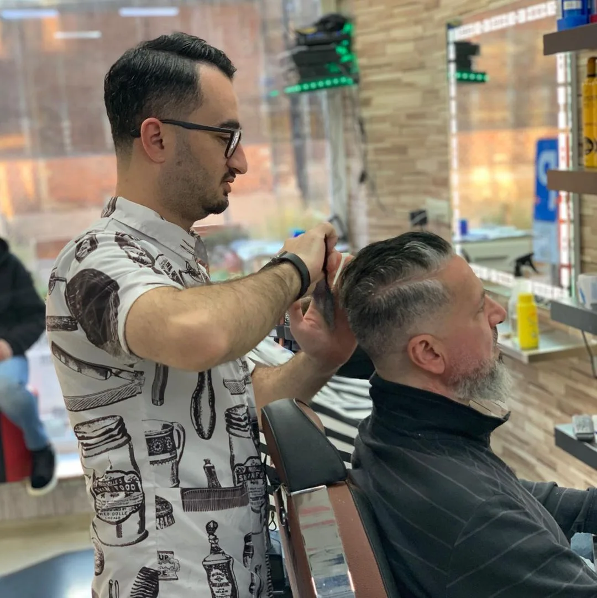
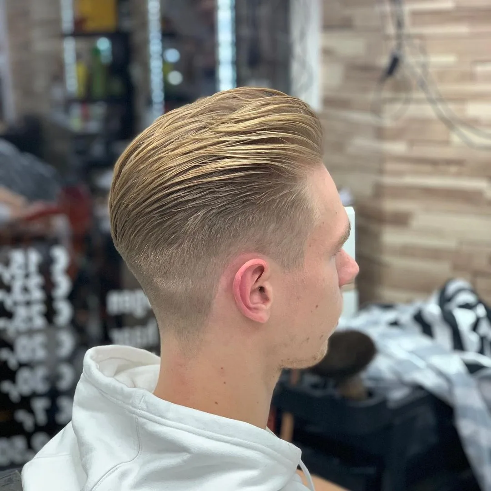

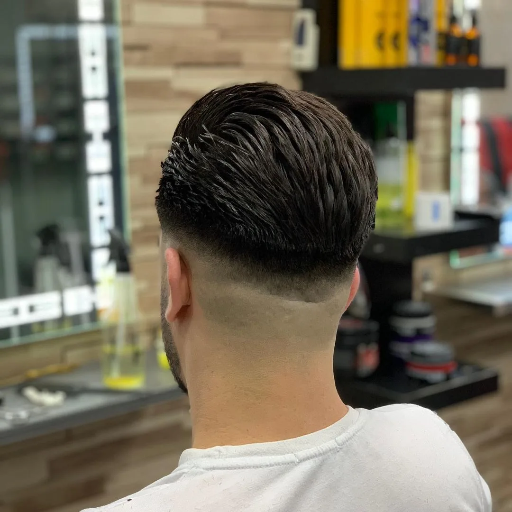

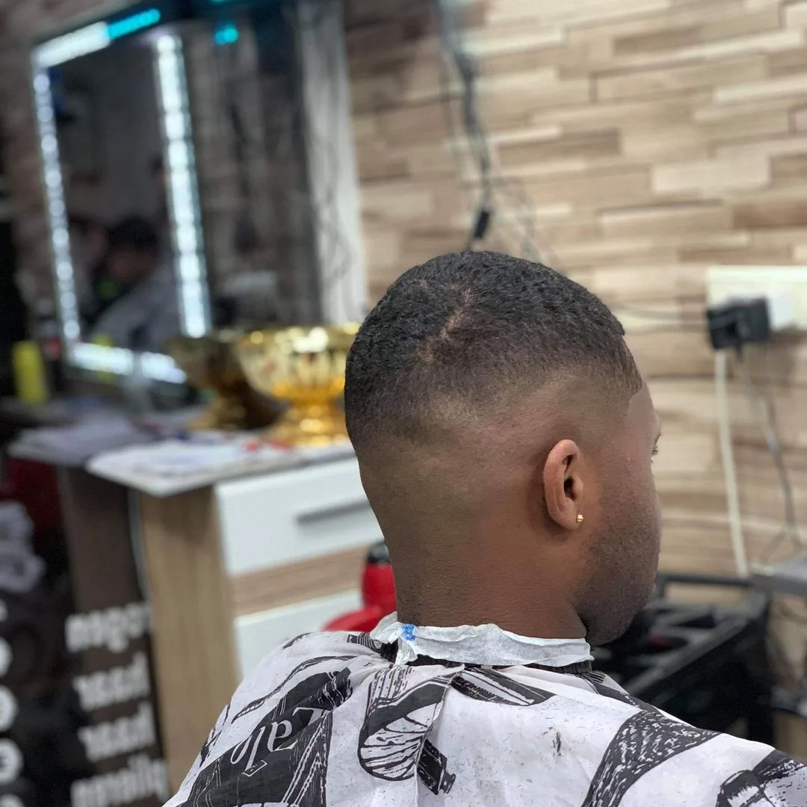
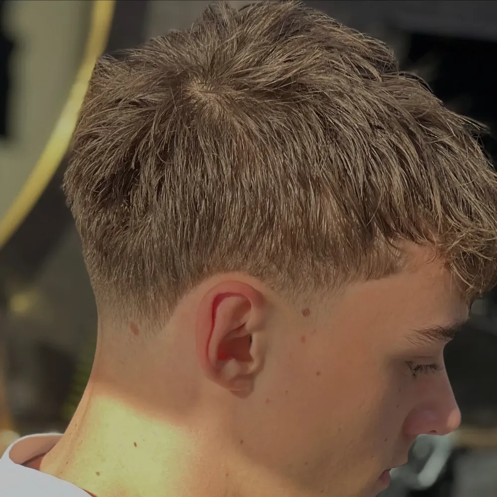
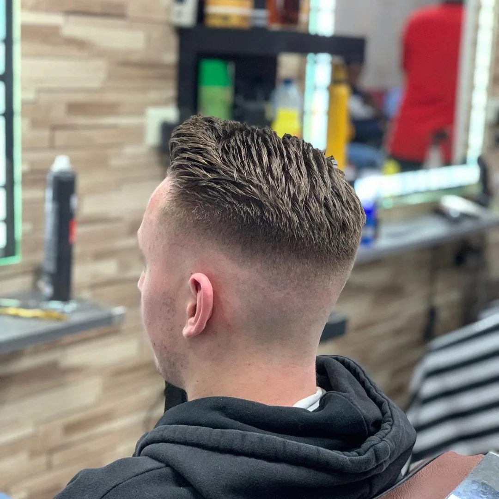
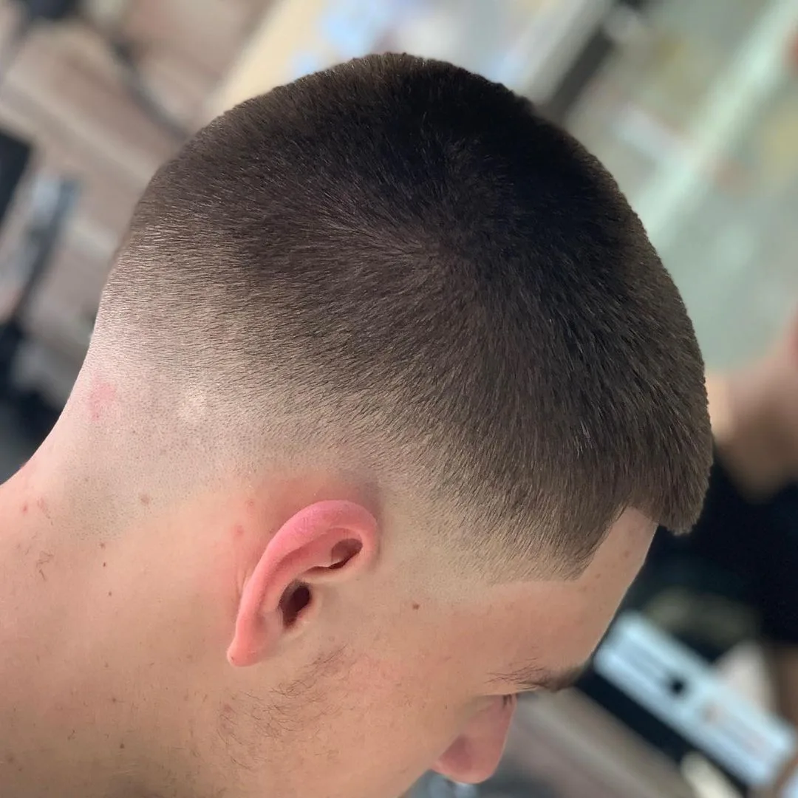
Geen keten, geen wisselende gezichten. Je wordt geknipt door een van de drie, en na een paar keer weet hij precies hoe jij het wil.
Knipt en stylet mannen en vrouwen, van klassiek tot wat nu hot is. Wat hij het liefst doet? Babbelen met de mensen in zijn stoel.
Altijd op zoek naar een nieuwe techniek. Je gaat niet alleen buiten met een kapsel, maar met een knipbeurt die je bijblijft.
Luistert eerst, knipt dan. Een klant noemde hem een echte perfectionist, en hij zorgt dat je met een glimlach de deur uitgaat.

Uit 418 reviews op Google. Veel klanten komen al jaren, sommigen al sinds hun veertiende.
Lees ze op Google"Ik ga al naar deze kapper sinds mijn 14j. Altijd topkwaliteit, warme sfeer en talentvolle kapper. Mijn haar is niet eenvoudig om te knippen, maar hier altijd perfect."
Thiel SodjiGoogle-review"Beste kapper van Leuven en omstreken. Geweldig personeel en altijd toppe sfeer."
Lars DelsupeheGoogle-review"Top klasse barber, beste van Leuven met voorsprong! Doet steeds zijn best en wil altijd het beste voor zijn klanten. Nog nooit een slechte ervaring gehad."
Thomas RabautGoogle-review"De place to be als je kapsel tiptop moet zijn. Bel gewoon en maak afspraak. Ze helpen je direct. Vriendelijk en behulpzaam. Toppers allemaal!!!"
Jens De CosterGoogle-reviewKies je zaak, je kapper en een moment dat past. Je bericht staat meteen klaar in WhatsApp, wij bevestigen je afspraak zo snel we kunnen.
3000 Leuven
3000 Leuven, onze tweede zaak, met een eigen Instagram.
Ik maakte deze demo voor jullie om te tonen wat er kan. Na een kort gesprek maak ik er iets veel persoonlijkers van, helemaal naar jullie wens.
Vrijblijvend. Ik kom langs of we bellen.
Op maat, op jullie eigen domein.
Geen voorschot. Jullie betalen pas als alles klaar is.
Hosting, domeinnaam en kleine wijzigingen, zoals nieuwe openingsuren.
Omdat een voorbeeld meer zegt dan een mail. Zo zien jullie meteen wat er kan, en het kost jullie niets.
Nee. Het gesprek is vrijblijvend. Vinden jullie het niks, dan is het daarmee gedaan.
Na ons gesprek staat jullie site binnen 10 tot 14 dagen online.
Zeker. Jullie domeinnaam kan gewoon blijven, de nieuwe site komt in de plaats van de oude.
Nee, dat doe ik op basis van ons gesprek. Eigen foto's zijn mooi meegenomen, maar niet nodig om te starten.